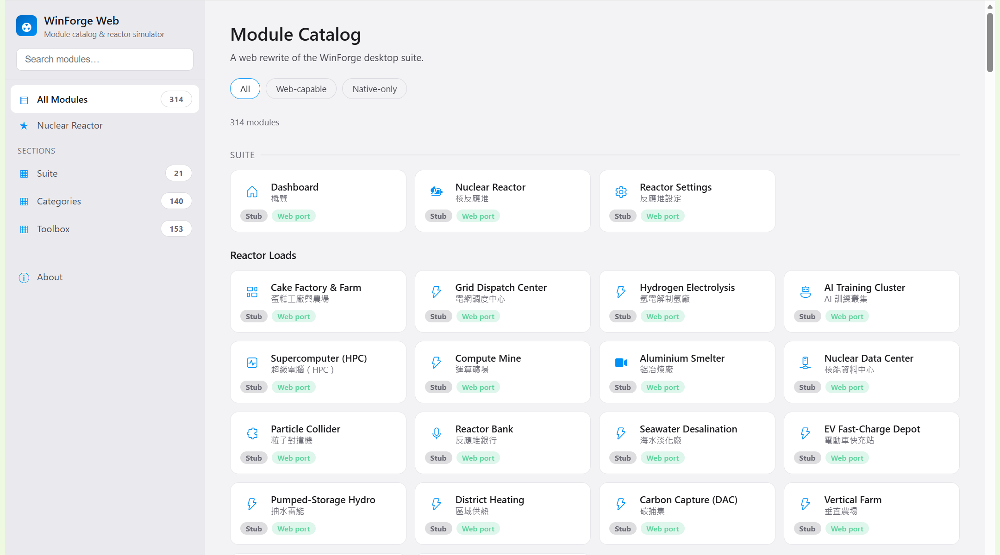
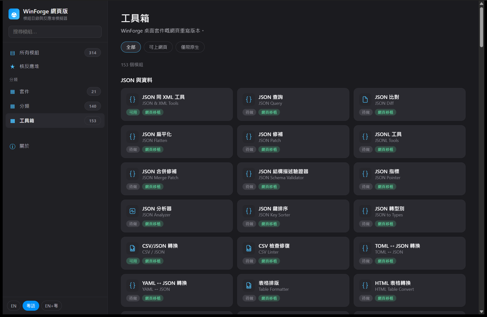

The Windows power-user suite, rebuilt for the web era.
314 modules in one app — from services, drives and packet capture to a physics-accurate PWR nuclear reactor simulator. Native Rust-backed actions. Portable, one-click install. Fully bilingual.
powershell -ExecutionPolicy Bypass -Command "irm https://codingmachineedge.github.io/winforge-web/install.ps1 | iex"
Downloads the latest signed release installer from GitHub and runs it. No package manager required.
Everything in one shell
One app. 314 tools.
A Fluent-inspired catalog browser over four sections — Suite, Categories, Toolbox, and Windows 11 tweaks — with real native operations behind the ones that need them.
PWR Reactor Simulator
A physics-accurate pressurized-water reactor: 6-group point kinetics, Doppler & moderator feedback, xenon/samarium poisons, boron control, decay heat, SCRAM — a real dynamical core model, not an animation.
314-module catalog
Services, Scheduled Tasks, Event Viewer, Nmap, packet capture, drives & SMART, package manager, dev toolbox, encoding/crypto/text utilities — browsable, searchable, bilingual.
Native Rust actions
A Tauri v2 Rust backend runs the real operations — command & PowerShell runners, system info, filesystem, live system probes — not fake screenshots. Web-safe modules also run in a plain browser.
Portable & one-click
A branded one-click installer, plus a fully portable zip that runs on a clean machine — WebView2 bundled offline, statically-linked CRT, vendored CLI tools. No prerequisites.
Bilingual, end to end
Every module title, keyword and label is English + 繁體中文. Search works in either language; your language choice persists across sessions.
Modern & fast
React 18 + TypeScript (strict) + Vite front end in a lightweight WebView shell — native-app responsiveness without an Electron-sized footprint.
The headline module
A nuclear reactor you can actually operate
WinForge Web's PWR simulator is a real point-kinetics core model, not an animation. Pull control rods, adjust boron concentration, watch Doppler and moderator-temperature feedback fight your reactivity, and manage xenon transients after a power change.
- ✔ 6-group delayed-neutron point kinetics (backward-Euler)
- ✔ Fuel/coolant thermal-hydraulics, RCP flow, decay heat (ANS-5.1)
- ✔ Xenon-135 & samarium poison dynamics, critical-boron solver
- ✔ Reactor Protection System auto-SCRAM & rod drop
- ✔ Live gauges, reactivity bars and trend sparklines

A look inside
Screenshots
Dark and light Fluent themes, a searchable catalog, and live native panels.


The catalog
Four sections, one catalog
A single data-driven catalog spanning every module in the app.
Suite web
Dashboard, the Nuclear Reactor, Reactor Settings, and 18 reactor-powered industrial loads.
Categories native
Files & Disks, System, Media & Capture, Tweaks & Input, Apps & Git, Security & Privacy.
Toolbox web
12 groups of pure client-side utilities: JSON/Data, Text, Encoding, Crypto, Web/HTTP, Network, Dev, Time, Calculators, Colors.
Windows 11 native
System tweaks and registry-level Windows 11 customizations.
Get started
Install in one line
Open PowerShell (no need to run as admin — the script elevates itself) and paste:
powershell -ExecutionPolicy Bypass -Command "irm https://codingmachineedge.github.io/winforge-web/install.ps1 | iex"
install.ps1 and runs it.Start-Process -Verb RunAs.iex — read install.ps1 first if you like.